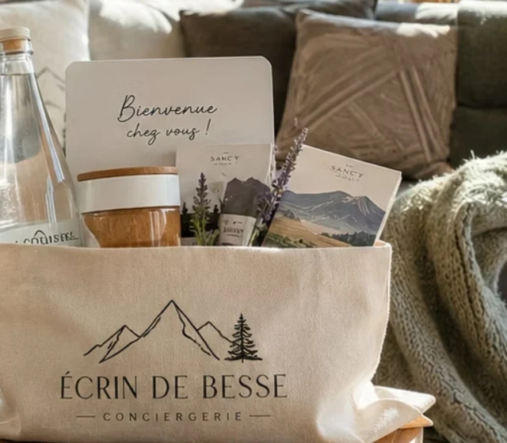
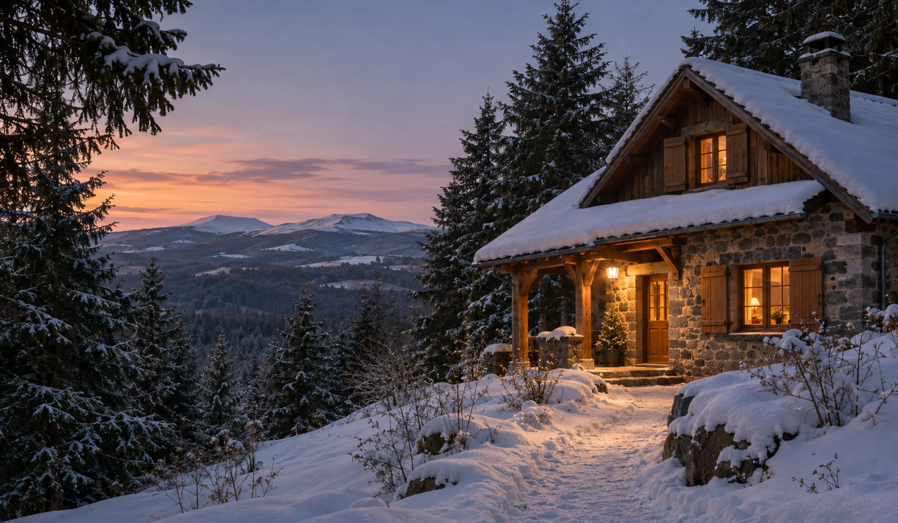
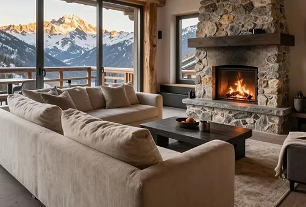
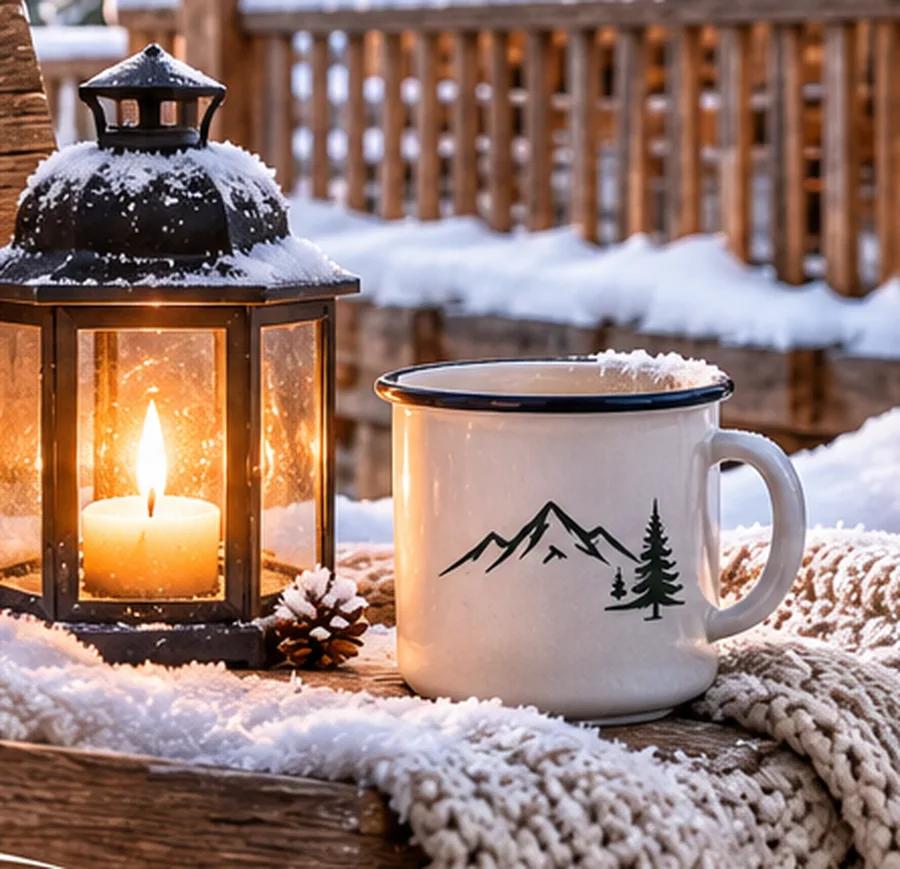
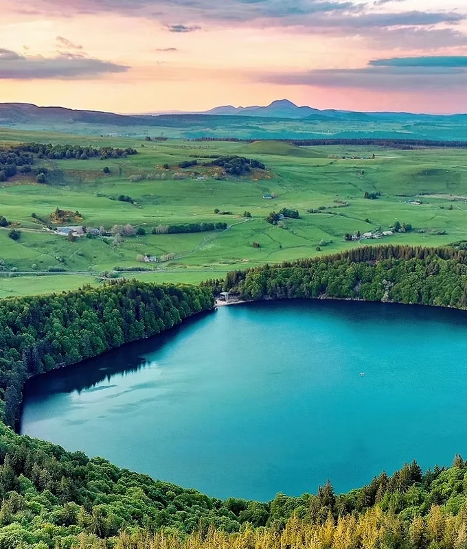
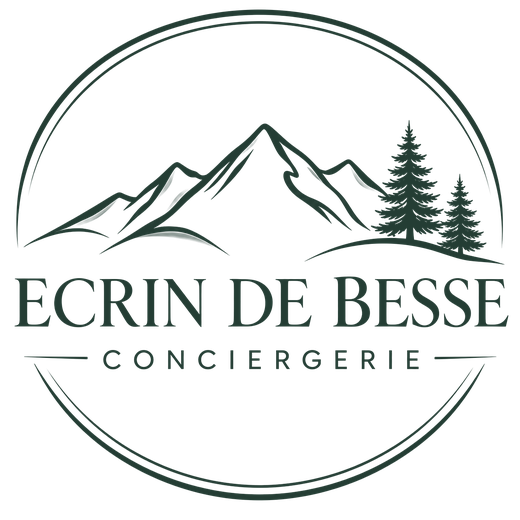

LE PLAISIR D’ARRIVERDéjà un peu
Déjà un peu
chez vous.
Un accueil personnalisé, du linge prêt et un kit de bienvenue pour commencer le séjour en douceur.

CONCIERGERIE · BESSE & SUPER-BESSE
Votre maison entre de bonnes mains.
Vos séjours, simplement inoubliables.
BIENVENUE CHEZ ÉCRIN DE BESSE
Une clé confiée, un feu qui crépite, une attention qui fait sourire. Nous croyons que la sérénité se construit dans les petits détails.
Au plus près de votre logement et de vos voyageurs, nous mettons du cœur dans chaque accueil. Pour que la montagne reste un plaisir, à chaque saison.

CÔTÉ PROPRIÉTAIRES
Une présence sur place, des échanges simples et un logement prêt à accueillir. Nous prenons le relais, selon vos besoins.
CÔTÉ VOYAGEURS
Posez vos valises, respirez.
Nous préparons ce petit supplément d’âme
qui fait toute la différence.

Un accueil personnalisé, du linge prêt et un kit de bienvenue pour commencer le séjour en douceur.
Commandez au drive. Nous récupérons vos courses et les rangeons dans le réfrigérateur et les placards, avant votre arrivée. Vous n’avez plus qu’à allumer le feu.

Une fuite, un chauffage capricieux : nous organisons l’intervention rapidement, avec notre partenaire multiservices.
Découvrir l’entretienDes attentions à la carte, organisées sur demande et selon les disponibilités. Échangeons sur vos envies.
DÉCORATIONS À THÈME
Nous habillons le logement avant votre arrivée. Vous poussez la porte, la magie opère.
Sapin décoré, guirlandes lumineuses, plaids et bougies : le chalet est prêt pour un réveillon au coin du feu, pendant que la neige tombe dehors.
ENTRETIEN & DÉPANNAGE
Parce que la gestion d’un logement ne s’arrête pas à l’accueil des voyageurs, nous travaillons main dans la main avec un partenaire multiservices de confiance, plombier chauffagiste de métier.
NOTRE TERRAIN DE CŒUR
Les premières neiges sur les pistes de Super-Besse, les sentiers d’été, les lacs et les grands espaces. Un même bonheur de revenir, saison après saison.


L’Auvergne, comme une évidence.DERRIÈRE LES CLÉS, UNE RENCONTRE
Tout a commencé par des vacances. Originaires de l’Hérault, nous avons découvert le Sancy, ses paysages, sa douceur de vivre. Nous sommes revenus. Encore. À chaque saison.
Jusqu’au jour où nous avons décidé d’y poser nos valises, pour de bon.
Écrin de Besse est né de cette envie : partager notre amour de la région et offrir aux propriétaires comme aux voyageurs un accompagnement sincère, attentif et humain.
« Prendre soin de votre maison,
comme nous aimons accueillir chez nous. »
ET SI ON SIMPLIFIAIT LES CHOSES ?
Votre logement, votre séjour, vos attentes. Nous prenons le temps de vous écouter.
Des prestations choisies ensemble et un devis adapté. Vous savez ce qui est prévu.
Nous préparons, accueillons et veillons sur place. Vous gardez l’esprit libre.
Nous accompagnons les propriétaires et les voyageurs autour de Besse, Super-Besse, Murol, du lac Chambon et de Saint-Nectaire. Contactez-nous avec l’adresse de votre logement pour confirmer notre possibilité d’intervention.
Oui. Accueil, ménage, intendance, courses ou décoration : nous proposons un accompagnement à la carte, ponctuel ou régulier, selon vos besoins et nos disponibilités.
Chaque logement et chaque demande sont différents. Après un échange sur vos attentes, nous vous transmettons un devis personnalisé précisant les prestations retenues et leur tarif.
Vous choisissez et réglez vos courses auprès du drive. Nous convenons ensemble du retrait et de l’accès au logement, puis nous les récupérons et les rangeons avant votre arrivée. Ce service se prévoit à l’avance, selon nos disponibilités.
Bien sûr. Que vous séjourniez dans un logement que nous gérons ou non, contactez-nous avec vos dates, l’adresse et l’occasion : nous vous dirons ce qu’il est possible d’organiser.
Oui. Nous coordonnons l’entretien et les dépannages avec un partenaire multiservices, notamment en plomberie et chauffage. Le périmètre, les délais et le coût de l’intervention sont convenus selon le besoin.
LE DÉBUT D’UNE BELLE RELATION
Un logement à nous confier ?
Un séjour à préparer ? Une envie particulière ?
Laetitia est à votre écoute.